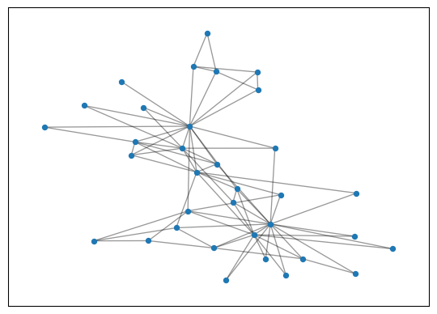
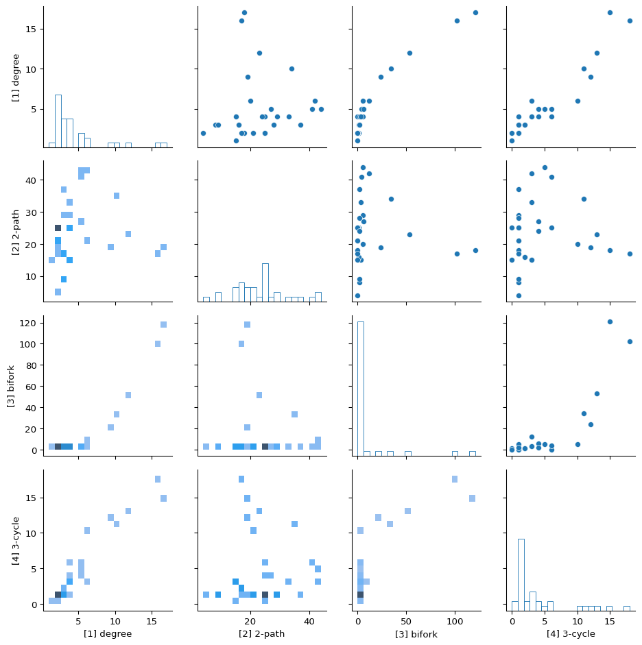

Getting started: usage
We provide a case study of the Fast Graphlet Transform, using Karate club, a small real-world dataset.
Prerequisites
You need to install the following packages for this demo.
Karate Club
We will use Zachary’s Karate Club graph for the demonstration.
Zachary W. (1977). An information flow model for conflict and fission in small groups. Journal of Anthropological Research, 33, 452-473.
Load network
import networkx as nx
import matplotlib.pyplot as plt
seed = 0 # seed random number generators for reproducibility
G = nx.karate_club_graph()
pos = nx.spring_layout(G, seed=seed)
fig, ax = plt.subplots()
nx.draw_networkx_nodes(G, pos, ax=ax, node_size=20)
nx.draw_networkx_edges(G, pos, ax=ax, alpha=0.4)
plt.show()

Compute fast graphlet transform
The returned object is a dataframe where rows correspond to nodes and columns to the 16 graphlets up to 4-node graphlets. For example, we can see the number of each graphlet incident to the first 5 nodes:
| Node id (0-based) | [0] vertex (==1) | [1] degree | [2] 2-path | [3] bifork | [4] 3-cycle | [5] 3-path, end | [6] 3-path, interior | [7] claw, leaf | [8] claw, root | [9] paw, handle | [10] paw, base | [11] paw, center | [12] 4-cycle | [13] diamond, off-cord | [14] diamond, on-cord | [15] 4-clique |
|---|---|---|---|---|---|---|---|---|---|---|---|---|---|---|---|---|
| 0 | 1 | 16 | 17 | 102 | 18 | 81 | 197 | 13 | 352 | 6 | 34 | 171 | 10 | 2 | 30 | 7 |
| 1 | 1 | 9 | 19 | 24 | 12 | 73 | 56 | 33 | 32 | 8 | 80 | 27 | 6 | 2 | 18 | 7 |
| 2 | 1 | 10 | 34 | 34 | 11 | 72 | 179 | 84 | 54 | 17 | 75 | 51 | 20 | 6 | 8 | 7 |
| 3 | 1 | 6 | 20 | 5 | 10 | 49 | 11 | 56 | 1 | 5 | 81 | 5 | 0 | 4 | 7 | 7 |
| 4 | 1 | 3 | 16 | 1 | 2 | 17 | 1 | 64 | 0 | 15 | 25 | 0 | 1 | 2 | 1 | 0 |
Visualize graphlet distributions
import seaborn as sns
pg = sns.PairGrid(F.iloc[:,1:5])
pg.map_diag(sns.histplot, fill=False, bins = 20)
pg.map_upper(sns.scatterplot)
pg.map_lower(sns.histplot, bins = 20)
